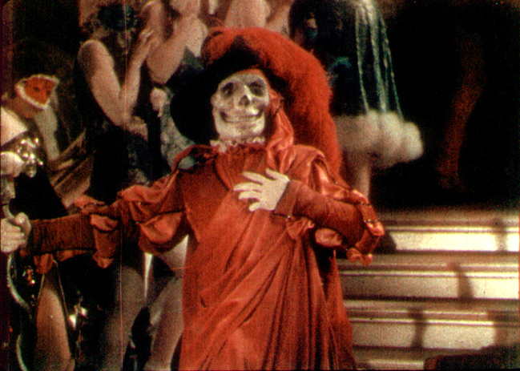
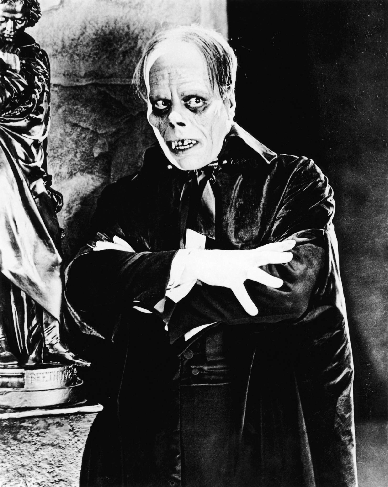

The first film adaption of the Phantom of the Opera. It is a silent film starring Lon Chaney and I don't know who plays Christine. The scene where the Phantom's face is revealed caused movie patrons to scream, faint, and even vomit because of Lon Chaney's horrifying makeup.
|  |  |